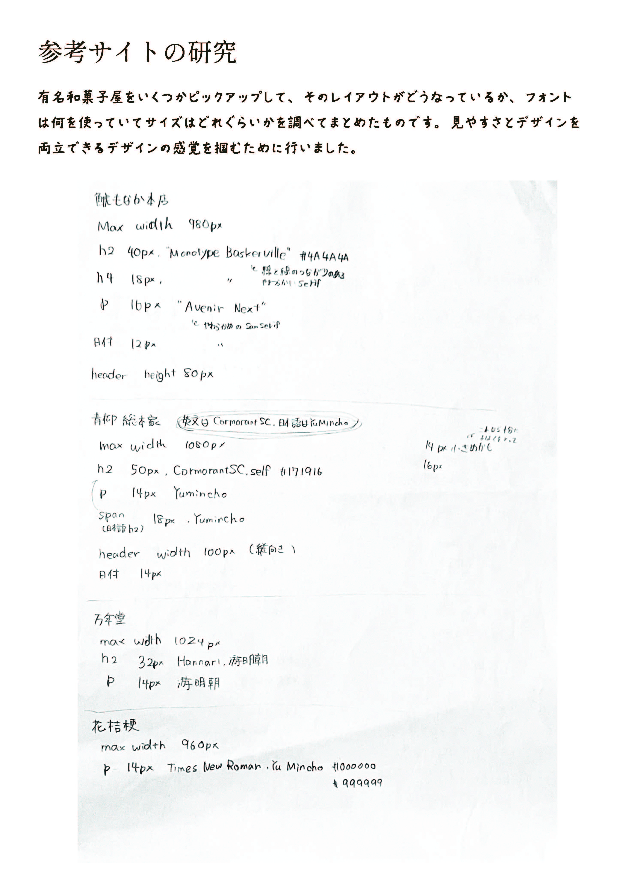

和菓子屋「花芽」Webサイト
Webサイト

名古屋市千種区にある小さな和菓子屋「花芽」のWebサイトを制作させていただきました。
Webデザインを学び始めて一年の集大成の作品です。クライアントとのヒアリングからデザイン、コーディング、CMSの導入まで一人で行いました。
- 制作期間
- 3ヶ月
- 使用ツール
- HTML / CSS / JavaScript / Illustrator / Photoshop / Figma / Visual Studio Code / microCMS
- 担当範囲
- 全て
- 作品URL
- https://aimai-fuji.pya.jp/haname/
- GitHub
- https://github.com/aimai2529/
制作過程
ヒアリング
ヒアリングでは、和菓子に対しての親しみやすさや気軽さを伝えたいとのご要望を受けました。
現在使用しているロゴと、「今日が花めく和のお菓子」というフレーズを使用してほしいともご依頼がありました。
デザイン
ラフ

工夫・苦労したところ
和の雰囲気を出しながら、気軽さを出せるように工夫しました。
InstagramAPIの導入には苦労しました。
製作者コメント
自分が大好きなものを盛り上げるお手伝いができると思うと、デザインやコーディングを一人で進める大変さよりも、やりがいを強く感じました。クライアントには、進捗があるたびに喜んでいただき、「こうしてほしい」という具体的な要望もいただけたことで、一緒に作り上げているという実感が湧き、さらに気合いが入りました。また、microCMSやJavaScriptが思い通りに動いたときの達成感は格別でした。一方で、クライアントへの連絡頻度やスケジュールの立て方には、改善の余地があったと反省しています。
2025年夏に運用開始を目標に、さらに調整をしております。